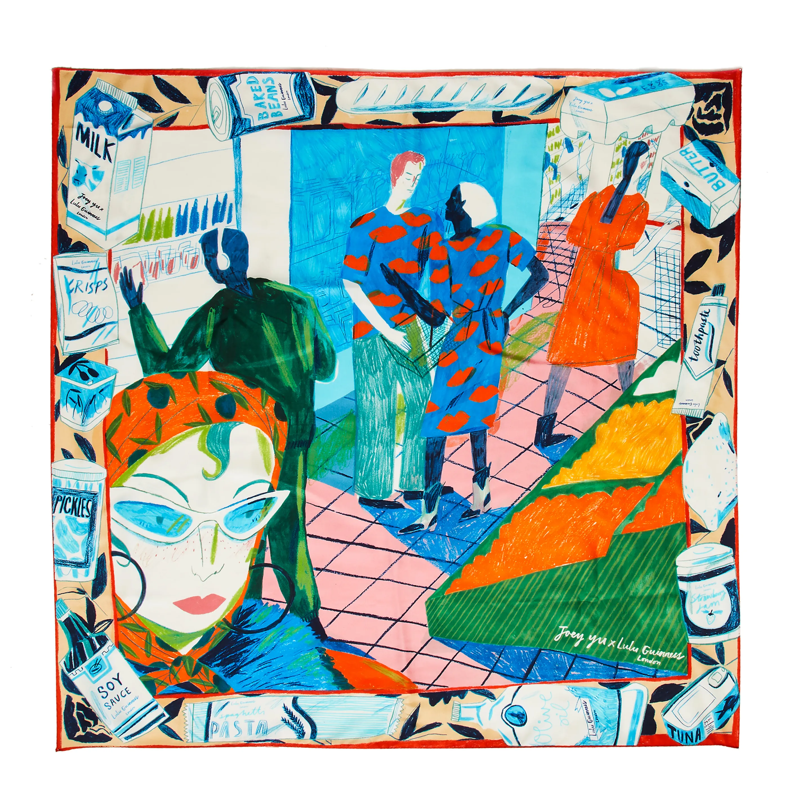
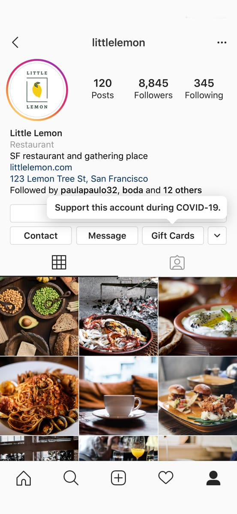
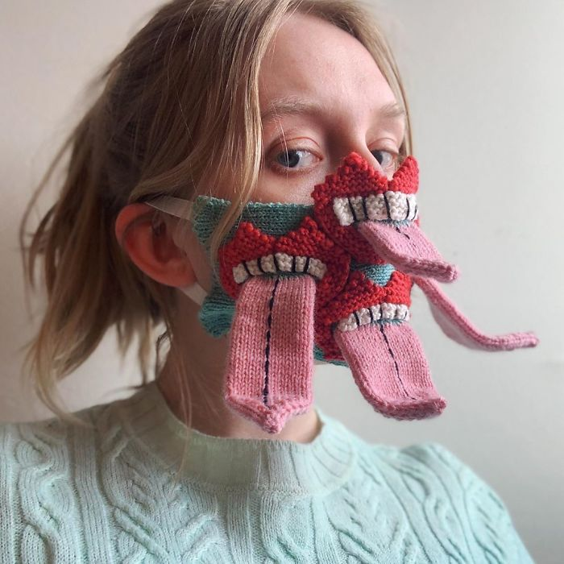
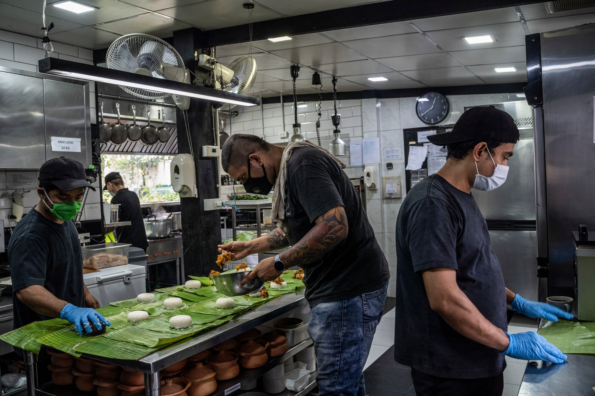
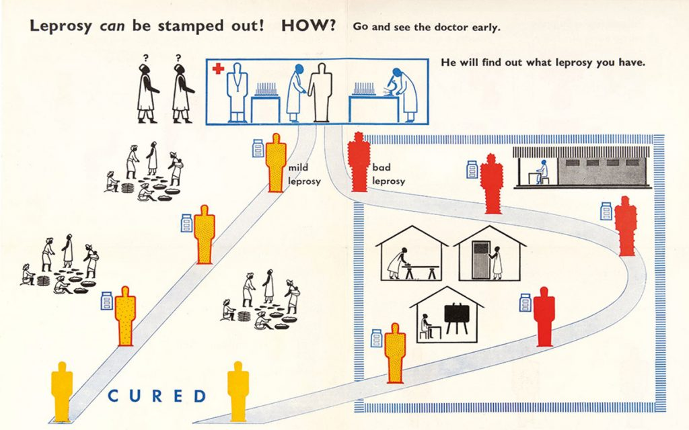
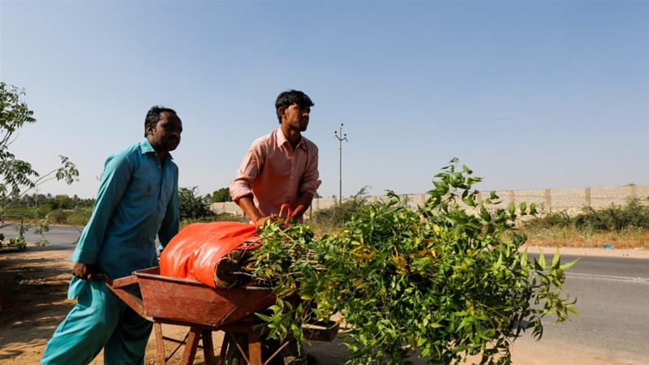
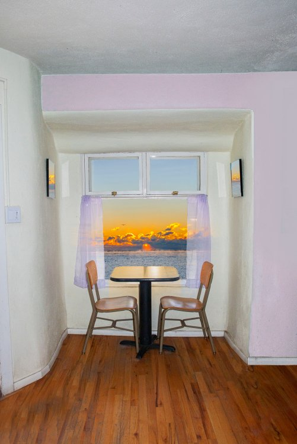
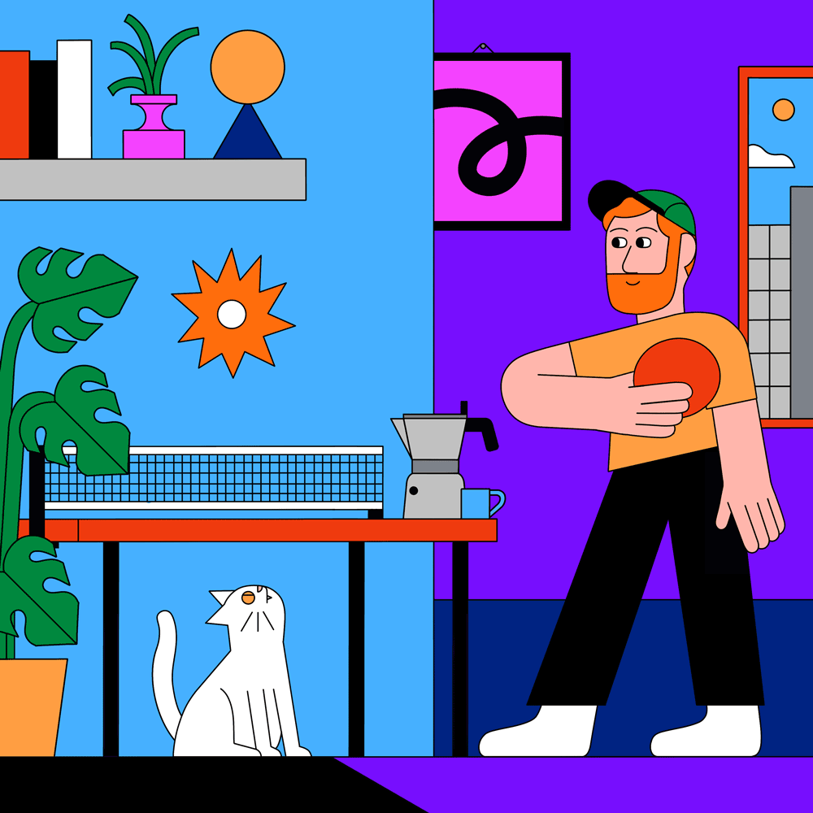
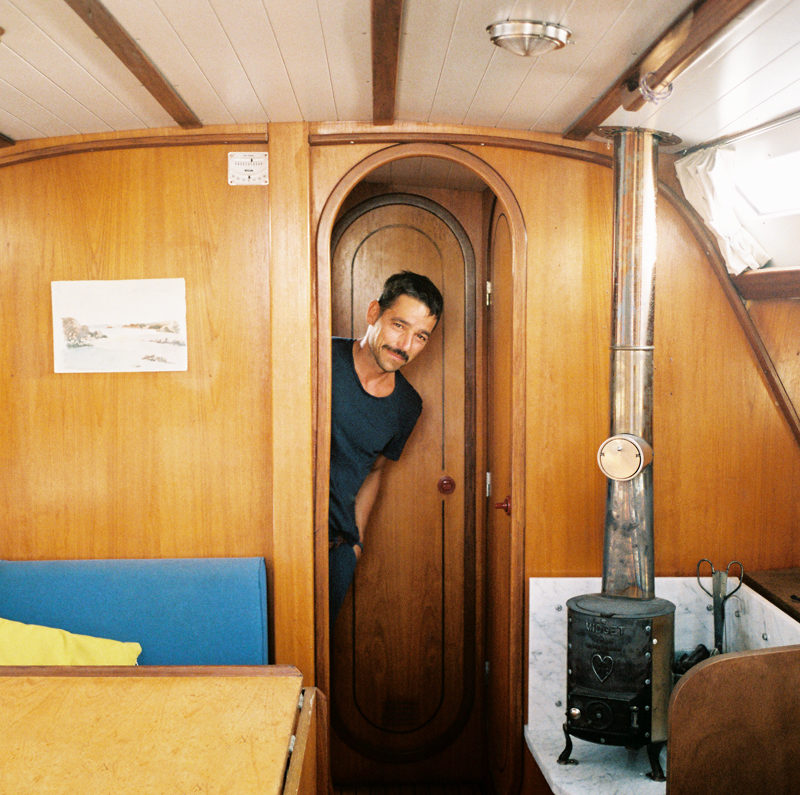
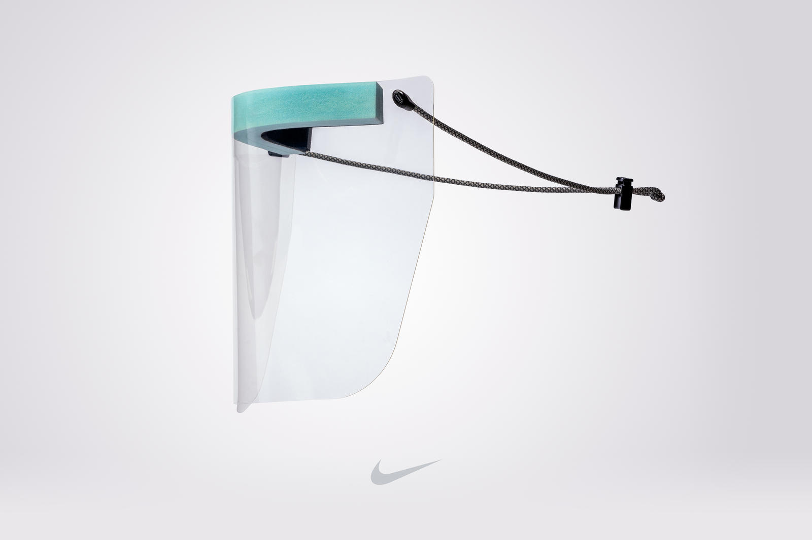

by @itsjoeyyu
How Quarantine Unlocked These Artist's Creativity
by Starr Rhett Rocque

Instagram Adds Feature to Support Small Businesses During Covid-19
by Rebecca Bellan

Cooking in the Time of Coronavirus
by Bon Appetit
A Chinese Chef’s Tasting-Menu Deliveries, with a Side of Instagram
by Hannah Goldfield


@yrurari Has An Uconventional Take On Face Masks

A Chef Finds New Flavors in a Pandemic
by Hannah Beech
Intimacy at a Distance
by Mark Hooper
In Praise of Phone Calls
by Sarah Larson
A Walk Through Wuhan: Fergus Coyle's Warm Portrait
by Lucy Bourton
Vimeo Filmmakers Document Small Businesses Navigating a World in Flux
The 2020 Commencement Speech You’ll Never Hear
by Caitlin Flanagan
#peaceofmind Shows the Positive Aspects of Being Stuck Inside

“Mrs. Burdick told the class she wanted to play a game. She would say a word, and then everyone had to find an object that began with the last letter of that word. The first word was “pen” — the children bolted from their chairs stacked with pillows looking for things that began with the letter N [...] There was a K — my wife helped my daughter find a crumpled-up kite — and there was a Y, and then another N. Around the stay-at-home houses of Houston, 6-, 7- and 8-year-olds raced around snatching up keys, yellow folders, yogurt cups, Nutella containers.
“It felt like a really short recess, but indoors,” my daughter said later, during an interview conducted in all seriousness over mac and cheese. Things fall apart. Second grade carries on.”
- Manny Fernandez via One Bright Thing

Design's Role in a Public Health Crisis
by Lucienne Roberts

As a 'Green Stimulus' Pakistan Sets Virus-Idled to Work Planting Trees
by Rina Saeed Khan
How Teachers Are Makeing Meaningful Connections with Students
by Priya Parker
Facebook Adds New 'Care' Emoji to Main App and Messenger
by Ingrid Lunden

Finding Connections During Quarantine with Animal Crossing
by Simon Parkin

A Chinese School's Solution for Keeping Kids 6 Feet Apart
by Lilly Smith
Creatives Are Uniting to Protect Vulnerable Women and Children Impacted by Self Isolation

“On my birthday last weekend, my fiancé led me to his laptop, and suddenly I heard screams of “Surprise!” My friends had organized a Zoom party without me finding out—a major coup on their part. Beneath the surprise, though, lay a familiar virus-induced sadness: I didn’t realize how much I’d miss hugging these people I love.
Right before everyone sang happy birthday, my doorbell rang: the chocolate bundt cake Mom had mailed arrived right on time. I blew out the candles and looked at the screen full of people clapping, laughing, and blowing kisses. At the top left corner was my mother, smiling into her camera, looking over me.”
- Phillip Picardi via It Took a Global Pandemic, but I’m Finally Calling My Mom
Reaching for Resilience in the Time of Covid-19
by Brian LaRossa

@tinycactus and the Escapist Art That Emerges From Dark Times
by Stefanie Zacharek
“I’m high risk because I have a rare lung disease. I haven’t been vocal about it, so not many people know. But those who do have taken such good care of me. Nobody’s made me feel needy. Some days I’ll open my door and there’s notes, or cards, or activities for my kids. One anonymous person left a bottle of hand sanitizer, with a note that said: ‘The world needs you.’ Last week we decided to return the favor. We put my daughter Zoey’s finger paintings in all our neighbors’ mailboxes. We called it Quarantine Art Club. Then yesterday we got a package on our doorstep. Our neighbor down the block had added all these beautiful drawings to Zoey’s painting. He signed it: ‘A Zoey and Karl production,’ so his name must be Karl. And his girlfriend’s name is Lauren. She added a bag of cookies. But that’s all I know about them! We’ve never even met them. They rode by the house yesterday and they waved out their car window. They said: ‘Is that Zoey?’ It was so much fun. I couldn’t get close, so I just kept blowing them kisses from the porch.”
- via Humans of New York
Google Doodle Games Relaunch to Encourage People to Stay Home and Play

by @evacremers
@savewithstories Is Reading Children's Stories to Help Kids Learn & Eat
Adventure Photos From Around the House
by Tod Perry

Read These Essays About How Others Have Isolated
by Apartamento Magazine

How Nike Turned Shoe Parts Into Face Shields In Just Two Weeks
by Mark Wilsom
A Design Brief From the Mayor of London During a Pandemic
by Lucy Bourton
How Coronavirus Might Make Our Cities More Sustainable
by The Conversation